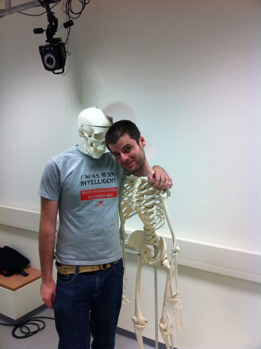

 |
Aaron WetzlerI am a direct-track PhD candidate at the EE Department of the Technion Israel Institute of Technology, currently working with Professor Ron Kimmel on problems relating to machine learning, gesture recognition, computer vision and numerical geometry of shapes. I completed my BSc in Mechatronics in the EE Department of the University of Cape Town.Contact InfoOffice AddressRoom 435 Taub Building Technion Haifa, 32000 |
Publications
 |
Real-Time Depth Refinement for Specular Objects, R Or-El, R Hershkovitz, A Wetzler, G Rosman, A M Bruckstein and R Kimmel, CVPR 2016 [Paper] [Video] [Webpage] [Bibtex] |
 |
Rule of Thumb: Deep Derotation for Improved Fingertip Detection, A Wetzler, R Slossberg and R Kimmel, BMVC 2015 [Paper] [Poster] [Slides] [Supplementary material] [HandNet page] [Bibtex] |
 |
Freehand Laser Scanning Using a Mobile Phone, R Slossberg, A Wetzler and R Kimmel, BMVC 2015 [Paper] [Poster][Slides] [Video] [Bibtex] |
 |
RGBD-Fusion: Real-Time High Precision Depth Recovery, R Or-El, G Rosman, A Wetzler, R Kimmel and A M Bruckstein, CVPR 2015 [Paper] [Video] [Webpage] [Bibtex] |
 |
Near Field Photometric Stereo with Point Light Sources, R Mecca, A Wetzler, R Kimmel and A M Bruckstein, SIAM 2014 [Paper] [Bibtex] |
 |
What can you do with a Beam and a reflecting prism?, A Wetzler, R Herskovitz, N Carmeli and R Kimmel, ECCV Demo 2014 [Poster] [Video] |
 |
Close Range Photometric Stereo with Point Light Sources, A Wetzler, R Mecca, R Kimmel and A M Bruckstein, 3DV 2014 [Paper] [Poster] [Bibtex] |
 |
A Dfferential Approach to Photometric Stereo with Perspective Viewing, R Mecca, A Tankus, A Wetzler and A M Bruckstein, SIAM 2014 [Paper] [Bibtex] |
 |
Direct Shape Recovery from Photometric Stereo with Shadows, R Mecca, A Wetzler, R Kimmel and A M Bruckstein, 3DV 2013 [Paper] [Poster] [Bibtex] |
 |
The Laplace-Beltrami operator: a ubiquitous tool for image and shape processing, A Wetzler, Y Aflalo, A Dubrovina and R Kimmel, ISSM 2013 [Paper] [Bibtex] |
 |
Patch-Space Beltrami Denoising of 3D Point Clouds, A Wetzler, G Rosman and R Kimmel, IEEEI 2012 [Paper] [Poster] [Bibtex] |
 |
Efficient Beltrami Flow Denoising in Patch-Space, A Wetzler and R Kimmel, SSVM 2011 [Paper] [Poster] [Code] [Bibtex] |
Theses
 |
Undergraduate thesis Low cost 3D Laser Scanning Unit with application to Face Recognition, A Wetzler, University of Cape Town 2005 [Thesis] |
Since 2010 I have designed and supervised over 30 student projects at the Technion in the following labs: GIP: Geometric Image Processing lab, CGM: Laboratory of Computer Graphics and Multimedia, NSSL: Network Software Systems Laboratory, SIPL: Signal and Image Processing Laboratory. Most of them are listed below. Anyone who is interested to hear about new or old projects is welcome to contact me by email.
 |
AR / 3D Skype to Android Raafat Francis | Hashem Naara |
This project focused around streaming real time depth images from a Kinect to an Android tablet. An AR marker detected by the Vuforia AR toolkit was used to determine the location of the camera. The end result yielded a Skype like experience with the real time 3D data hovering above the marker like a hologram. |
 |
Augmented Reality Posters Michael Weiss | Myr Hagay |
There is no dynamic activity involved in looking at a poster. In this project the students used the contents of a poster to create an AR marker enabling them to add virtual content when viewed through an Android phone. |
 |
QR code applications on Android Tamir Buchris | Vitaly Kleynik |
In this project we aimed to design a system to enable students on campus to scan QR codes positioned outside lecture rooms to provide information about current or upcoming lectures. The system was also able to provide information about a lecturer or a certain room. It automatically generated QR codes for each new entry into a database which was then stuck to the door or wall outside the relevant space. |
 |
Smartphone Game Liav Sitruk | Idan Banani |
This project revolved around learning how to use the Box2D and Cocos2D libraries for game making. |
 |
Hebrew Speech Recognition on iPad Nadav Merlis | Liora Neeman |
State of the art Speech recognition systems are complex and difficult to replicate. Using recent research pioneered by Prof. Koby Kramer the students developed a dictation application for the iPad which recognized and typed out spoken Hebrew letters. |
 |
3D Stereo Reconstruction using iPhones Ron Slossberg | Omer Shaked |
Using a simple dual iPhone holder the video streams of two devices were synchronized over BlueTooth. This enabled 3D reconstruction on the devices using block matching stereo. |
 |
Marker tracking Alex Kemarsky |
The use of highly efficient and repeatable FAST features was used to learn points on a predefined marker image. These were then detected using a decision tree on a new image resulting in a real time marker detection and pose extraction utility for PCs. |
 |
Predator TLD on iOS Mariaan Mansour | Majd Srour |
The popular TLD algorithm presented by Dr. Zdenek Kalal was implemented from scratch for near real time use on an iPad. |
 |
3D Volume Carving on iPhone Sergey Kucher | Alex Povichuk |
Voxel carving is a straightforward procedure for removing voxels that are known not to belong to the visual hull of an object. In this project an iPhone was paired with the Vuforia AR SDK and a green base and marker. This enabled known pose extraction of the camera and a full volume carving framework was implemented on an iPhone including marching cubes to provide the final scanned mesh. |
 |
Hand tracking Sa'ar Zehavi |
Detecting and tracking a hand in a depth stream is an important component for any user interface. In this project a system was built based on a known hand tracking approach. The method was implemented and adjusted to enable hand tracking for a close range PMD nano camera. |
 |
OpenFusion Nurit Schwabsky | Vered Cohen |
The popular KinectFusion algorithm was implemented from scratch with minimal dependencies on external libraries other than CUDA and OpenCV. The framework was designed to be fully camera agnostic with an abstract camera interface. |
 |
CamPong Rom Herschkovitz | Nofar Carmeli |
Using a prism and a Samsung Galaxy Beam this project focused on extracting the location of a user's hand in front of the devices inbuilt camera and projector. This enabled realtime projection and play of a Pong game on any flat surface. |
 |
Face Depth Estimation from a Single Color Image Tova Krakauer |
In this project, a Random Decision Forest was trained on a database of depth and color images captured of a painted manequin face. The different areas of the face were painted different colors and the forest was trained to recognize these different patches based on the depth image alone. |
 |
HeartBeat for iOS Or Mayaan | Michael Leybovich |
The flash available on an iPhone is strong enough to consistently illuminate a user's skin when pressed tightly against the skin surface. In this project the red channel of the camera was used to record a signal that varies in synch with a user's heart rate as the reflectance properties change with blood pressure. |
 |
3D Scanner on Android Arkadi Godlin | Alex Kligman | Alon Zivrin |
The Samsung Beam has an inbuilt projector. Using a prism to redirect the light of the projector to overlap the capture frustrum of the inbuilt camera enables multiple different applications including structured light 3D reconstruction. |
 |
Multi-View 3D reconstruction application for iPhone Mohamad Jabareen | Mostafa Agbariah |
The popular 123DCatch App is based on multiview 3D reconstruction. In this project readily available OpenSource tools were used to replicate the capture and reconstruction pipeline as a proof of concept iPhone app which can replicate complex functionality. The images were captured and uploaded to a server where they were processed by the PMVS2 software on the server's GPU. |
 |
Multi-user virtual war-room for Oculus Rift Noam Peretz | Mor Furshpan |
Senior commanders and strategic planners typically use 2D maps to keep track of armed forces. This project aimed to expose the potential for using full Virtual Reality in such scenarios for collaboration and planning. Voice chatting and synchronized avatar motions allow multiple entities to interact in a virtual space useful designed specifically to simulate military scenarios. |
 |
Full positional tracking for Oculus Rift Dor Goldbaum | Vlady Ostrovski |
The incredibly popular Oculus Rift has a significant disadvantage in the form of no positional tracking. In this project we tested two different methods for positional tracking of the Rift. |
 |
AUVSI Seafarer 2014 GrayOwl Image Processing team Li-tal Kupperman | Eli Hayoon | Nadav Ofir | Ziv Nachum | Itay Guy | Liat Katz |
The anual AUVSI Seafarer competition is one of the most popular of its kind for university level aeronautic students. As flight and control systems have become more advanced so have the computer vision tasks assigned to the competition. We designed a fully operational ground control and onboard vision system to detect and identify target properties from images captured on a student built, fully autonomous GrayOwl drone. |
 |
CutOut for Android Elad Richardson |
One of the most common tasks in image editing is that of segmentation. If performed manually it can be a frustrating and time consuming process. In this project an Android app was built to perform highly efficient object segmentation based only on user scribbles. |
 |
RobotRun game Hadar Reuveny | Amit Bekerman |
RobotRun is a game designed in Unity3D which uses the Intel Creative 3D camera to detect the position of a player's hand. This information is used to control a robot on screen. The objective of the game is to avoid obstacles in a similar way to Temple Run. The scenery and obstacles are dynamically created allowing good players to continue running indefinitely. |
Videos of hand tracking and fingertip detection.